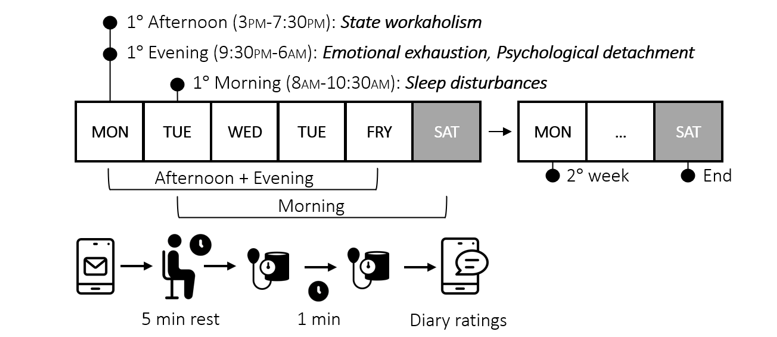

Multilevel Confirmatory Factor Analysis
Introduction, syntax, and practical examples (lavaan)
Multilevel what!?
SEM = multivariate linear models formalized as systems of equations.
linear models
\(\text{PERF}=\beta_1\text{IQ}+\beta_2\text{ANX}+\epsilon\)

SEM system
\[ \begin{aligned} \text{ANX} &= \beta_1\text{SEFF} + \epsilon_2\\ \text{PERF} &= \beta_2\text{SEFF} + \beta_3\text{ANX} + \epsilon_3 \end{aligned} \]

The two fundamental parts of a SEM
- Structural model: relations among variables (latent/observed)
- Measurement model: indicators → latent variables (CFA)

Confirmatory factor analysis (CFA)
CFA is the measurement model:
- number of factors (1, 2, …, k)
- which indicators load on which factor
- (co)variances among factors and residual variances

Factor structure (concept)
A factor structure is one possible configuration of relations between a set of observed variables and one or more latent factors, defining:
- the number of latent variables (1-factor, 2-factor, …, k-factor model)
- the pattern of relations between each observed variable and its factor (loading pattern)

Starting from the covariance matrix of observed variables, CFA tests the fit of one or more hypothesized factor structures and estimates the corresponding loadings.
Multilevel CFA (MCFA)
MCFA estimates measurement structure at both levels and matches both matrices:
within-level factor model
- \((S_\text{within}\) vs \(\hat{\Sigma}_\text{within})\)
between-level factor model
- \((S_\text{between}\) vs \(\hat{\Sigma}_\text{between})\)
That is why we need level-specific fit and level-specific parameters.

Multiple-factor MCFA (compare structures)
Some constructs show different dimensionality within vs between.

Negative Level-2 variances (Heywood cases)
Negative residual variances at Level 2 are common in MCFA because:
- error tends to accumulate at Level 1
- Level-2 loadings can be very strong → residual variances close to 0
- sampling fluctuations around ~0 can produce negative estimates

lhs op rhs block level est se z pvalue ci.lower ci.upper
22 NV_w ~~ TA_w 1 1 0.003 0.017 0.202 0.840 -0.030 0.037
23 NV_w ~~ FA_w 1 1 -0.013 0.017 -0.772 0.440 -0.047 0.020
24 TA_w ~~ FA_w 1 1 -0.016 0.017 -0.942 0.346 -0.050 0.017
46 v1 ~~ v1 2 2 -0.016 0.008 -2.001 0.045 -0.032 0.000
47 v2 ~~ v2 2 2 0.007 0.009 0.827 0.408 -0.010 0.024
48 v3 ~~ v3 2 2 0.011 0.008 1.420 0.156 -0.004 0.027
49 t1 ~~ t1 2 2 0.007 0.009 0.730 0.465 -0.011 0.025
50 t2 ~~ t2 2 2 -0.013 0.008 -1.654 0.098 -0.028 0.002
51 t3 ~~ t3 2 2 -0.002 0.008 -0.216 0.829 -0.017 0.014
52 f1 ~~ f1 2 2 0.002 0.008 0.294 0.769 -0.013 0.018
53 f2 ~~ f2 2 2 -0.005 0.007 -0.630 0.529 -0.019 0.010
54 f3 ~~ f3 2 2 -0.007 0.008 -0.979 0.328 -0.022 0.007
58 NV_b ~~ TA_b 2 2 -0.034 0.057 -0.596 0.551 -0.145 0.077
59 NV_b ~~ FA_b 2 2 -0.013 0.054 -0.248 0.804 -0.120 0.093
60 TA_b ~~ FA_b 2 2 -0.030 0.051 -0.598 0.550 -0.130 0.069[ADD REFERENCE: Hox (2010); Kolenikov & Bollen (2012) → add bib entries]
Invariance across groups (reminder)
Question: are we measuring the same construct across groups?
Typical approach: multi-group CFA with a sequence of constraints (configural → metric → scalar → …).

Luca’s real-data example (slides)
 
Beyond invariance: homology
If cross-level invariance holds (conceptually and empirically), we can test whether the construct has a similar nomological network across levels (cross-level homology).

[ADD REFERENCE: Chen et al. (2005) → add bib entries]